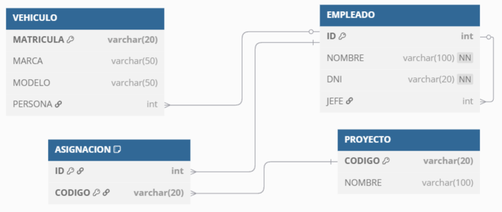

Modelo Físico: SQL - Instrucciones DML¶
Propuesta didáctica¶
Una vez creada la estructura de la base de datos mediante DDL, en esta segunda parte de la unidad vamos a iniciar el RA4 "Modifica la información almacenada en la base de datos utilizando asistentes, herramientas gráficas y el lenguaje de manipulación de datos".
Criterios de evaluación¶
Respecto al RA4:
- CE4a: Se han identificado las herramientas y sentencias para modificar el contenido de la base de datos.
- CE4b: Se han insertado, borrado y actualizado datos en las tablas.
- CE4d: Se han diseñado guiones de sentencias para llevar a cabo tareas complejas.
- CE4h: Se han adoptado medidas para mantener la integridad y consistencia de la información
Contenidos¶
Tratamiento de datos:
- Inserción, borrado y modificación de registros.
- Integridad referencial.
Cuestionario inicial
- ¿Cuál es el propósito de las sentencias DML?
- ¿Para qué sirve el comando
INSERT INTO? - ¿Qué sucede si omitimos el
WHEREen unDELETE FROM?
Programación de Aula (7h)¶
Esta unidad es la quinta, con lo que se imparte en la primera evaluación, a finales del mes de noviembre. Tras una primera parte dedicada a DDL con seis sesiones lectivas, la segunda parte (DML) tiene una duración estimada de 7 sesiones lectivas:
| Sesión | Contenidos | Actividades | Criterios trabajados |
|---|---|---|---|
| 7 | DML. Inserciones | AC511 | CE4a, CE4b |
| 8 | DML. Actualizaciones y Borrados | AC512 | CE4b, CE4d, CE4h |
| 9 | Supuesto carga | AC515 | CE2b, CE2e, CE2h, CE4b, CE4d, CE4h |
| 10 | Supuesto DDL-DML I | AC516 | CE2a, CE2b, CE2c, CE2d, CE2e, CE4d |
| 11 | Supuesto DDL-DML II | AC517 | CE4b, CE4d, CE4h |
| 12 | Prueba objetiva | PO518 | RA2, RA4 |
Al finalizar esta unidad, comenzaremos un nuevo reto, centrado en el modelo físico, creando y cargando datos.
DML¶
Una vez que ya sabemos cómo crear las estructuras de datos para guardar la información, vamos a aprender a gestionarla.
CRUD
Las operaciones DML se asocian al acrónimo CRUD:
- Create: insertar
- Read: consultar
- Update: modificar
- Delete: eliminar
Sobre una tabla, las operaciones que vamos a poder realizar son:
- insertar datos en una tabla
- modificar datos de una tabla
- eliminar datos de una tabla
- consultar datos de una o más tablas.
Cuando hablamos de "datos de una tabla", podemos referirnos a registros completos, campos concretos o incluso elementos relacionados de varias tablas.
Para realizar estas operaciones, se utiliza el subconjunto DML (Data Manipulation Language) de SQL. En esta unidad nos vamos a centrar en la inserción, modificación y eliminación de datos, dejando las consultas para trabajarlas en profundidad en las siguientes unidades.
Para los siguientes ejemplos vamos a trabajar con la siguiente tabla:
CREATE TABLE dml8a (
id INT AUTO_INCREMENT PRIMARY KEY,
nombre VARCHAR(64) NOT NULL DEFAULT 'Chuck Norris',
email VARCHAR(64));
Inserciones¶
La sentencia para insertar datos es INSERT INTO, tanto en MariaDB como en PostgreSQL:
INSERT INTO tabla(col1, col2, ...) VALUES (valor1, valor2, ...);
A la hora de indicar la tabla, podemos omitir el nombre de las columnas, lo que implicará que deberemos indicar los valores para todas las columnas de la tabla. Si en cambio solo queremos insertar valores en algunas columnas, hemos de indicarlas de forma explícita al lado del nombre de la tabla.
Veamos unos ejemplos. Podemos insertar en la tabla dml8a utilizando:
INSERT INTO dml8a VALUES (1, 'Aitor Medrano', 'a.medrano@edu.gva.es');
INSERT INTO dml8a(id, nombre) VALUES (2, 'Pedro Casas');
Es decir, si no ponemos los nombres de los campos detrás del nombre de la tabla, en los valores deberemos introducir todos los valores siguiendo el orden de los campos según fueron creados (siempre puedes consultar la estructura de una tabla mediante DESCRIBE nombre_tabla). Además, los tipos de los datos deben concordar, incluso en el tamaño o precisión, debiendo haber una correspondencia posicional uno a uno entre las columnas y los valores introducidos.
Si queremos insertar varios registros con una única instrucción, los indicaremos separados por comas:
INSERT INTO dml8a VALUES (3, 'María Sánchez', 'maria@gmail.com'),
(4, 'Eva Amaral', 'eva@gmail.com');
-- Query OK, 2 rows affected (0.002 sec)
-- Records: 2 Duplicates: 0 Warnings: 0
Finalmente, si queremos insertar los valores por defecto asociados a una columna o un valor nulo (por ejemplo, a una clave ajena) usaremos DEFAULT y NULL respectivamente. Por ejemplo:
INSERT INTO dml8a VALUES (66, DEFAULT, NULL);
SELECT * FROM dml8a WHERE id=66;
-- +----+--------------+-------+
-- | id | nombre | email |
-- +----+--------------+-------+
-- | 66 | Chuck Norris | NULL |
-- +----+--------------+-------+
-- 1 row in set (0.003 sec)
Recuperando la clave subrogada¶
Cuando trabajamos con claves subrogadas, como es el caso de id que es un campo auto incrementable, podemos omitir su valor, y automáticamente se le asignará el siguiente valor de la secuencia:
INSERT INTO dml8a(nombre) VALUES ('José Manuel Pérez');
Cuando insertamos un registro en una tabla autoincrementable, podemos recuperar el valor creado mediante la función LAST_INSERT_ID(). En el bloque de programación mediante PL/SQL profundizaremos en su uso:
SELECT LAST_INSERT_ID();
-- +------------------+
-- | LAST_INSERT_ID() |
-- +------------------+
-- | 67 |
-- +------------------+
-- 1 row in set (0.001 sec)
¿Por qué el 67 y no el 5?
Aunque solo teníamos cinco registros, previamente habíamos insertado de forma explícita el id 66. El contador de un campo autoincrementable siempre continúa a partir del mayor valor existente, por lo que el siguiente valor generado es el 67. Los valores intermedios (del 5 al 65) no se reutilizan, del mismo modo que tampoco se reutilizan los identificadores de los registros que eliminemos.
En el caso de PostgreSQL, si queremos recuperar la información sobre la fila recién insertada, podemos emplear la cláusula RETURNING:
INSERT INTO dml8a (nombre, email)
VALUES ('David Suárez', 'david@gmail.com')
RETURNING id;
Si estamos trabajando con UUID como tipo de datos para las claves primarias a las cuales en el valor por defecto le asociamos un UUID, por ejemplo, mediante codigo UUID DEFAULT UUID(), para recuperar el valor insertado también utilizaremos INSERT ... RETURNING id:
CREATE TABLE dml8a_UUID (
codigo UUID DEFAULT UUID(),
nombre VARCHAR(32),
CONSTRAINT PK_dml8a_UUID PRIMARY KEY (codigo)
);
INSERT dml8a_UUID(nombre) VALUES ('Aitor') RETURNING codigo;
-- +--------------------------------------+
-- | codigo |
-- +--------------------------------------+
-- | 1e8e8786-cfaa-11f0-8ada-720fe3396247 |
-- +--------------------------------------+
-- 1 row in set (0.012 sec)
Usando variables
Otra opción que estudiaremos en el bloque de PL/SQL es el uso de variables:
SET @id = UUID();
INSERT INTO dml8a_UUID (codigo, nombre)
VALUES (@id, 'Aitor');
SELECT @id;
-- +--------------------------------------+
-- | @id |
-- +--------------------------------------+
-- | 5a86a327-cfaa-11f0-8ada-720fe3396247 |
-- +--------------------------------------+
-- 1 row in set (0.001 sec)
Supuesto DML¶
A partir del Supuesto DDL, vamos a insertar los datos de las tablas para rellenar la base de datos (pero sin aplicar las modificaciones ALTER TABLE, trabajaremos directamente sobre el script de CREATE TABLE).
Para ello, es importante respetar las dependencias de las claves ajenas para primero insertar las tablas que no tienen dependencias. Por esta razón, primero insertaremos los datos en PROYECTO y luego en EMPLEADO, para posteriormente las tablas VEHICULO y ASIGNACION que dependen de las anteriores. Si no respetamos el orden, y por ejemplo, insertáramos los vehículos antes que los empleados, al hacerlo, obtendríamos diversos errores de integridad referencial.
Así pues, los comandos SQL necesarios son:
INSERT INTO PROYECTO (CODIGO, NOMBRE) VALUES
('101', 'GRIS'),
('102', 'BLANCO'),
('103', 'NEGRO'),
('104', 'VERDE');
INSERT INTO EMPLEADO (ID, NOMBRE, DNI, JEFE) VALUES
(10, 'ANA MARTIN', '1111A', NULL),
(15, 'JUAN LOPEZ', '2222B', 10),
(20, 'CARMEN DIAZ', '3333C', 10),
(25, 'ERNESTO GOMEZ', '4444D', 20),
(30, 'SILVIA GONZALEZ', '5555E', 15),
(35, 'FERNANDO SIERRA', '7777F', 15);
-- VEHICULO referencia a EMPLEADO
INSERT INTO VEHICULO (MATRICULA, MARCA, MODELO, PERSONA) VALUES
('2345AAA', 'Seat', 'Altea', NULL),
('1234BBB', 'Opel', 'Astra', 15),
('5555CCC', 'Seat', 'Ibiza', NULL),
('9876DDD', 'Lexus', 'LC', 10),
('1111FFF', 'Seat', 'Ibiza', NULL),
('2222GGG', 'Opel', 'Astra', 20);
-- ASIGNACION referencia tanto a EMPLEADO como a PROYECTO
INSERT INTO ASIGNACION (ID, CODIGO) VALUES
(10, '101'),
(15, '101'),
(20, '101'),
(10, '102'),
(15, '102'),
(30, '102'),
(35, '102'),
(20, '103');
¿Y si quiero insertar dos empleados, de manera que el primero sea el jefe del segundo, pero para ninguno de ellos quiero asignarle su código de manera explicita, ya que lo debe autogenerar el SGBD?
-- Insertamos el primer empleado
INSERT INTO EMPLEADO (NOMBRE, DNI, JEFE) VALUES ('Empleado Nuevo 1', '8888G', 10);
-- Al segundo empleado le asignamos como jefe el identificador de la última inserción
INSERT INTO EMPLEADO (NOMBRE, DNI, JEFE) VALUES ('Empleado Nuevo 2', '9999G', LAST_INSERT_ID());
-- Comprobamos los resultados
-- (recuperamos los empleados con un identificador superior al último que habíamos insertado)
select * from EMPLEADO where ID > 35;
-- +----+------------------+-------+------+
-- | ID | NOMBRE | DNI | JEFE |
-- +----+------------------+-------+------+
-- | 36 | Empleado Nuevo 1 | 8888G | 10 |
-- | 37 | Empleado Nuevo 2 | 9999G | 36 |
-- +----+------------------+-------+------+
Gestión de errores
Si insertamos datos con tipos diferentes, dejamos campos no nulos en blanco, o insertamos datos en un campo que es clave ajena y no cumplimos la integridad referencial, el SGBD nos devolverá diferentes mensajes:
INSERT INTO EMPLEADO VALUES ('cuarenta', 'Empleado con errores', '1234', NULL);
-- ERROR 1366 (22007): Incorrect integer value: 'cuarenta' for column `supuesto_ddl_proyecto`.`EMPLEADO`.`ID` at row 1
En cambio, si ejecutamos INSERT INTO EMPLEADO VALUES (40, 'JUAN PALOMO', 1234, NULL); no dará error porque convertirá el número 1234 a un string antes de insertarlo.
¿Y qué sucede si insertamos un dato que no cumple la integridad referencial en una clave ajena? Al intentar insertar un empleado que apunte a otro que no existe, obtendremos un error de fallo de la restricción de la clave ajena:
INSERT INTO EMPLEADO VALUES (45, 'Empleado con error en integridad referencial', '5678', 1);
-- ERROR 1452 (23000): Cannot add or update a child row: a foreign key constraint fails
-- (`supuesto_ddl_proyecto`.`EMPLEADO`, CONSTRAINT `FK_EMPLEADO_JEFE` FOREIGN KEY (`JEFE`) REFERENCES `EMPLEADO` (`ID`) ON DELETE SET NULL ON UPDATE CASCADE)
También podemos insertar datos con el resultado de una consulta mediante la instrucción INSERT SELECT, pero esta operación la estudiaremos en profundidad más adelante.
Modificaciones¶
La sentencia para actualizar datos es UPDATE ... SET, tanto en MariaDB como en PostgreSQL:
UPDATE tabla SET campo=valor1 [,campo2=valor2];
Si queremos decidir qué elementos modificar, añadimos la expresión WHERE, ya que, si no, actualizaremos todos los registros de la tabla:
UPDATE tabla SET campo=valor WHERE condicion;
Veamos unos ejemplos. Podemos modificar el email de un usuario concreto:
UPDATE dml8a SET email='pedro@gmail.com' WHERE id=2;
O modificar varios campos de una sola vez:
UPDATE dml8a SET nombre='Pedro Casas García',
email='pedro.casas@gmail.com'
WHERE id=2;
También podemos realizar cálculos al modificar un campo:
-- Incrementamos la población de Elche en un 10%
UPDATE CIUDAD SET poblacion = poblacion * 1.10 WHERE nombre = 'Elche';
El filtrado de los datos mediante la instrucción WHERE ofrece múltiples posibilidades, tanto con operadores relacionales, aritméticos, funciones de tratamiento de textos, fechas, etc. como comparación con el resultado de una consulta u operaciones de conjuntos. A partir de la próxima unidad profundizaremos en todas las alternativas del atributo WHERE.
Borrados¶
No te olvides...
Si no conoces este meme, hazte el favor y mira el siguiente vídeo.
La sentencia para borrar datos es DELETE FROM ..., tanto en MariaDB como en PostgreSQL:
DELETE FROM tabla;
Si queremos decidir qué elementos eliminar, añadimos la expresión WHERE, ya que si no, eliminaremos todos los registros de la tabla, lo cual es muy peligroso:
DELETE FROM tabla WHERE condicion;
Conviene destacar que, si queremos eliminar todos los datos de una tabla, es mucho más eficiente utilizar el comando TRUNCATE TABLE, tanto en MariaDB como en PostgreSQL:
TRUNCATE TABLE dml8a;
Por debajo, cuando truncamos una tabla, realmente está eliminando la tabla y volviéndola a crear, eliminando todos los ficheros de datos y reiniciando los campos autonuméricos.
Trabajando con fechas¶
Cuando vayamos a insertar o modificar un campo cuyo valor sea una fecha, dependiendo del tipo de dato y el formato que necesitemos, tenemos diferentes formas de hacerlo:
DATE: Solo fecha (YYYY-MM-DD)DATETIME: Fecha y hora (YYYY-MM-DD HH:MM:SS)TIMESTAMP: Similar aDATETIMEpero con rango más limitadoTIME: Solo hora (HH:MM:SS)
-
Formato estándar de cadena ISO (
YYYY-MM-DD) es el más recomendado por su compatibilidad universal:-- INSERT INSERT INTO tabla (fecha) VALUES ('2025-12-03'); INSERT INTO tabla (fecha_hora) VALUES ('2025-12-03 14:30:00'); INSERT INTO tabla (hora) VALUES ('14:30:00'); -- UPDATE UPDATE tabla SET fecha = '2025-12-04' WHERE id = 1; UPDATE tabla SET fecha_hora = '2025-12-04 16:45:00' WHERE id = 1; UPDATE tabla SET estado = 'vencido' WHERE fecha < '2025-01-01'; UPDATE tabla SET estado = 'activo' WHERE fecha BETWEEN '2025-01-01' AND '2025-12-31'; -- DELETE DELETE FROM tabla WHERE fecha = '2025-12-03'; DELETE FROM tabla WHERE fecha_hora = '2025-12-03 14:30:00'; DELETE FROM tabla WHERE fecha BETWEEN '2025-01-01' AND '2025-03-31'; DELETE FROM tabla WHERE fecha > '2025-12-31'; -
Usando funciones de fecha, ideales para trabajar con fechas dinámicas y cálculos temporales:
-- INSERT -- Fecha y hora actual INSERT INTO tabla (fecha_hora) VALUES (NOW()); INSERT INTO tabla (fecha_hora) VALUES (CURRENT_TIMESTAMP()); -- Solo fecha actual INSERT INTO tabla (fecha) VALUES (CURDATE()); -- Solo hora actual INSERT INTO tabla (hora) VALUES (CURTIME()); -- UPDATE -- Establecer fecha/hora actual UPDATE tabla SET fecha = NOW() WHERE id = 1; UPDATE tabla SET fecha = CURDATE() WHERE id = 1; -- Sumar o restar tiempo UPDATE tabla SET fecha = DATE_ADD(fecha, INTERVAL 7 DAY) WHERE id = 1; UPDATE tabla SET fecha = DATE_SUB(fecha, INTERVAL 1 MONTH) WHERE id = 1; UPDATE tabla SET fecha_hora = DATE_ADD(fecha_hora, INTERVAL 2 HOUR) WHERE id = 1; -- Actualizar según condiciones temporales UPDATE tabla SET estado = 'procesado' WHERE MONTH(fecha) = MONTH(CURDATE()) AND YEAR(fecha) = YEAR(CURDATE()); -- DELETE -- Eliminar registros de hace más de 30 días DELETE FROM tabla WHERE fecha < DATE_SUB(CURDATE(), INTERVAL 30 DAY); -- Eliminar registros del año pasado DELETE FROM tabla WHERE YEAR(fecha) < YEAR(CURDATE()); -- Eliminar registros más antiguos que 6 meses DELETE FROM tabla WHERE fecha < DATE_SUB(NOW(), INTERVAL 6 MONTH); -- Eliminar registros futuros DELETE FROM tabla WHERE fecha > CURDATE(); -
Usando
STR_TO_DATE()para formatos personalizados (por ejemplo, provenientes de formularios o archivos externos):-- INSERT INSERT INTO tabla (fecha) VALUES (STR_TO_DATE('03/12/2024', '%d/%m/%Y')); INSERT INTO tabla (fecha_hora) VALUES (STR_TO_DATE('12-03-2024 02:30 PM', '%m-%d-%Y %h:%i %p')); INSERT INTO tabla (fecha) VALUES (STR_TO_DATE('2024.12.03', '%Y.%m.%d')); -- UPDATE UPDATE tabla SET fecha = STR_TO_DATE('15/12/2024', '%d/%m/%Y') WHERE id = 1; UPDATE tabla SET fecha_hora = STR_TO_DATE('25-12-2024 10:30 AM', '%d-%m-%Y %h:%i %p') WHERE id = 1; -- DELETE DELETE FROM tabla WHERE fecha = STR_TO_DATE('31/12/2023', '%d/%m/%Y'); DELETE FROM tabla WHERE fecha < STR_TO_DATE('01/01/2024', '%d/%m/%Y');Los formatos empleados para
STR_TO_DATE()son:%d= Día (01-31)%m= Mes (01-12)%Y= Año con 4 dígitos (2024)%y= Año con 2 dígitos (24)%H= Hora formato 24h (00-23)%h= Hora formato 12h (01-12)%i= Minutos (00-59)%s= Segundos (00-59)%p= AM/PM
Funciones de fecha
Aunque las estudiaremos en detalle en la siguiente unidad, conviene conocer las siguientes funciones para manipulación de fechas:
DATE_ADD(fecha, INTERVAL valor unidad): Suma tiempo a una fechaDATE_SUB(fecha, INTERVAL valor unidad): Resta tiempo a una fechaDATEDIFF(fecha1, fecha2): Calcula diferencia en días entre fechasTIMESTAMPDIFF(unidad, fecha1, fecha2): Permite especificar la unidad (YEAR,MONTH,DAY,HOUR,MINUTE,SECOND)
Y para extracción:
YEAR(fecha),MONTH(fecha),DAY(fecha): Extraen componentes de la fechaHOUR(hora),MINUTE(hora),SECOND(hora): Extraen componentes de la hora
En resumen, los formatos más comunes y recomendados son el estándar ISO (YYYY-MM-DD) y las funciones como NOW() o CURDATE() para fechas actuales.
Operaciones en cascada¶
Recuerda que, si eliminamos un registro referenciado por una clave ajena, se ejecutará la regla descrita en la tabla hija, de manera que es posible que no podamos eliminar ciertos datos al estar referenciados desde otra tabla (si estaban configuradas con NO ACTION o RESTRICT).
En cambio, si la clave ajena se configuró con CASCADE, al borrar el registro, se borrarán todos los registros de las tablas hijas que referenciaban a éste.
Finalmente, si se configuró con SET NULL, la clave ajena de la tabla hija se pondrá a nulo.
Para demostrar su uso, nos vamos a basar en el Supuesto DDL el cual define las siguientes tablas:

Si nos fijamos en la tabla ASIGNACION, tenemos que su definición de claves tanto hacia EMPLEADO como a PROYECTO es siempre en cascada:
CREATE TABLE ASIGNACION (
ID INT NOT NULL,
CODIGO VARCHAR(20) NOT NULL,
CONSTRAINT PK_ASIGNACION PRIMARY KEY (ID, CODIGO),
CONSTRAINT FK_ASIGNACION_EMPLEADO
FOREIGN KEY (ID) REFERENCES EMPLEADO(ID)
ON DELETE CASCADE
ON UPDATE CASCADE,
CONSTRAINT FK_ASIGNACION_PROYECTO
FOREIGN KEY (CODIGO) REFERENCES PROYECTO(CODIGO)
ON DELETE CASCADE
ON UPDATE CASCADE
)
¿Piensas que es una buena decisión que los borrados se propaguen en cascada? Pues va a depender de cada caso. Si borramos un PROYECTO, se entiende que debería eliminar todas las asignaciones que tiene. Pero quizá sea una operación crítica la cual no queremos que sea tan fácil.
Si revisamos los datos, teníamos que el proyecto 104 no tiene ninguna asignación asociada, pero sí el 103. Al borrar el proyecto 103, con la definición de las claves ajenas que hemos definido, se borrarán todas las asignaciones a dicho proyecto.
delete from PROYECTO where CODIGO = 103;
select * from ASIGNACION;
-- +----+--------+
-- | ID | CODIGO |
-- +----+--------+
-- | 10 | 101 |
-- | 15 | 101 |
-- | 20 | 101 |
-- | 10 | 102 |
-- | 15 | 102 |
-- | 30 | 102 |
-- | 35 | 102 |
-- +----+--------+
-- 7 rows in set (0.001 sec)
A priori, parece una buena decisión, ya que si eliminamos un proyecto, tiene sentido liberar a los empleados de la asignación a dicho proyecto.
Veamos un ejemplo más problemático. Si nos centramos en la tabla EMPLEADO, tenemos que hay una relación reflexiva para expresar si un empleado es jefe de otro empleado, pero en este caso, la clave ajena pone a nulos los valores eliminados (en vez de propagar el borrado):
CREATE TABLE EMPLEADO (
ID INT AUTO_INCREMENT,
NOMBRE VARCHAR(100) NOT NULL,
DNI VARCHAR(20) NOT NULL UNIQUE,
JEFE INT,
CONSTRAINT PK_EMPLEADO PRIMARY KEY (ID),
CONSTRAINT FK_EMPLEADO_JEFE
FOREIGN KEY (JEFE) REFERENCES EMPLEADO(ID)
ON DELETE SET NULL
ON UPDATE CASCADE
);
Por ejemplo, el empleado 25 tiene configurado al empleado 20 como su jefe, y a su vez, este al 10.
select * from EMPLEADO where ID=25;
-- +----+---------------+-------+------+
-- | ID | NOMBRE | DNI | JEFE |
-- +----+---------------+-------+------+
-- | 25 | ERNESTO GOMEZ | 4444D | 20 |
-- +----+---------------+-------+------+
select * from EMPLEADO where ID=20;
-- +----+-------------+-------+------+
-- | ID | NOMBRE | DNI | JEFE |
-- +----+-------------+-------+------+
-- | 20 | CARMEN DIAZ | 3333C | 10 |
-- +----+-------------+-------+------+
¿Qué sucederá si eliminamos al empleado 20? Pues como la restricción de borrado está puesta a nulo, pondrá dicho valor en la clave ajena, indicando que aquellos empleados cuyo jefe era el empleado 20 se han quedado sin jefe, pero no se les ha eliminado a ellos.
delete from EMPLEADO where ID = 20;
select * from EMPLEADO where ID = 25;
-- +----+---------------+-------+------+
-- | ID | NOMBRE | DNI | JEFE |
-- +----+---------------+-------+------+
-- | 25 | ERNESTO GOMEZ | 4444D | NULL |
-- +----+---------------+-------+------+
Si eliminamos la clave ajena y la volvemos a crear para que haga el borrado en cascada, y a continuación volvemos a insertar los datos
ALTER TABLE EMPLEADO DROP CONSTRAINT FK_EMPLEADO_JEFE;
ALTER TABLE EMPLEADO ADD CONSTRAINT FK_EMPLEADO_JEFE
FOREIGN KEY (JEFE) REFERENCES EMPLEADO(ID)
ON DELETE CASCADE
ON UPDATE CASCADE;
INSERT INTO EMPLEADO (ID, NOMBRE, DNI, JEFE) VALUES (20, 'CARMEN DIAZ', '3333C', 10);
UPDATE EMPLEADO SET JEFE = 20 WHERE ID = 25;
¿Qué sucederá con el empleado 25 al eliminar al empleado 20?
delete from EMPLEADO where ID = 20;
select * from EMPLEADO where ID = 25;
-- Empty set (0.001 sec)
Como el borrado es en cascada, al borrar el empleado 20 también se elimina el 25. Y si este fuera jefe de otro, se borrarían todos. Vamos a comprobarlo. Ahora en la tabla solo nos quedan cuatro empleados:
select * from EMPLEADO;
-- +----+-----------------+-------+------+
-- | ID | NOMBRE | DNI | JEFE |
-- +----+-----------------+-------+------+
-- | 10 | ANA MARTIN | 1111A | NULL |
-- | 15 | JUAN LOPEZ | 2222B | 10 |
-- | 30 | SILVIA GONZALEZ | 5555E | 15 |
-- | 35 | FERNANDO SIERRA | 7777F | 15 |
-- +----+-----------------+-------+------+
Si borramos el empleado 10, el cual es jefe del 15, el cual es jefe del 30 y del 35, ¡provocará un vaciado de todos los datos!
delete from EMPLEADO where ID=10;
select * from EMPLEADO;
-- Empty set (0.000 sec)
Fusionando datos¶
En ocasiones, necesitamos fusionar datos de una tabla origen con los datos de otra (destino), facilitando la sincronización de tablas o la integración de datos externos. Para ello, desde SQL:2003 podemos emplear la sentencia MERGE INTO, también llamada UPSERT en algunos motores, la cual permite combinar en una sola instrucción varias operaciones de manipulación de datos, basándose en una condición de coincidencia entre una tabla origen y una tabla destino, y realizando:
INSERT: cuando un registro no existe en la tabla destino.UPDATE: cuando sí existe y queremos modificarlo.DELETE(opcional) → cuando se cumple cierta condición adicional.
El problema es que MariaDB no la soporta. Mientras que PostgreSQL sí que tiene soporte completo para MERGE INTO, MariaDB ofrece la sentencia INSERT ON DUPLICATE KEY UPDATE que, aunque menos potente, permite obtener un comportamiento similar.
Su sintaxis es:
-
MariaDB
En MariaDB usaremos
INSERT ... ON DUPLICATE KEY UPDATE, ya sea medianteINSERT ... VALUES:INSERT INTO tabla_destino (col1, col2, ...) VALUES (valor1, valor2, ...) ON DUPLICATE KEY UPDATE col2 = valor2, col3 = valor3 ...;O
INSERT ... SELECT:INSERT INTO tabla_destino (col1, col2, ...) SELECT colA, colB, ... FROM tabla_origen ON DUPLICATE KEY UPDATE col2 = VALUES(col2), col3 = VALUES(col3) ...;En ambos casos,
VALUES(columna)hace referencia al valor que se habría insertado en dicha columna de la tabla destino. En el caso deINSERT ... SELECT, también podemos referenciar directamente las columnas de la tabla origen (por ejemplo,col2 = tabla_origen.colB)Funciona cuando la tabla tiene una clave única (
PRIMARY KEYoUNIQUE), de manera que si no existe, se inserta el nuevo registro, pero si existe (y colisiona en clave), entonces ejecuta elUPDATE. -
PostgreSQL
En PostgreSQL usaremos
MERGE INTO:MERGE INTO tabla_destino AS destino USING tabla_origen AS origen ON (condición_de_coincidencia) WHEN MATCHED THEN UPDATE SET columna1 = valor1, columna2 = valor2 WHEN NOT MATCHED THEN INSERT (columna1, columna2, ...) VALUES (valor1, valor2, ...);La sentencia
MERGE INTO, además de poder añadir tantas cláusulasWHEN [NOT] MATCHEDcomo necesitemos, permite añadir condiciones dentro para refinar mejor el comportamiento de la operación.Por ejemplo
WHEN MATCHED and origen.precio > 0 THENseleccionaría los registros que coincide la clave y cuyo precio es superior a 0.
Para empezar, vamos a realizar un ejemplo sencillo con MariaDB para entender su funcionamiento, insertando un nuevo empleado, y luego actualizando su información. Supongamos que tenemos los empleados conforme al Supuesto DML, los cuales tiene un ID autoincrementable y el DNI como clave única:
select * from EMPLEADO;
-- +----+-----------------+-------+------+
-- | ID | NOMBRE | DNI | JEFE |
-- +----+-----------------+-------+------+
-- | 10 | ANA MARTIN | 1111A | NULL |
-- | 15 | JUAN LOPEZ | 2222B | 10 |
-- | 20 | CARMEN DIAZ | 3333C | 10 |
-- | 25 | ERNESTO GOMEZ | 4444D | 20 |
-- | 30 | SILVIA GONZALEZ | 5555E | 15 |
-- | 35 | FERNANDO SIERRA | 7777F | 15 |
-- +----+-----------------+-------+------+
-- 6 rows in set (0.001 sec)
Si queremos insertar un nuevo empleado, pero con un DNI que ya existe, al ejecutar la siguiente sentencia obtendremos un error de clave duplicada, ya que el campo DNI es único:
insert into EMPLEADO (NOMBRE, DNI, JEFE) values ('Nuevo empleado', '3333C', 15);
-- ERROR 1062 (23000): Duplicate entry '3333C' for key 'DNI'
Sin embargo, si empleamos INSERT ... ON DUPLICATE KEY UPDATE, al intentar insertar el nuevo empleado, se detectará la colisión en el campo DNI y se actualizará el nombre y el jefe del empleado con dicho DNI:
insert into EMPLEADO (NOMBRE, DNI, JEFE) values ('Nuevo empleado', '3333C', 15)
ON DUPLICATE KEY UPDATE
NOMBRE = VALUES(NOMBRE),
JEFE = VALUES(JEFE);
-- Query OK, 2 rows affected (0.001 sec)
select * from EMPLEADO where DNI = '3333C';
-- +----+------------------+-------+------+
-- | ID | NOMBRE | DNI | JEFE |
-- +----+------------------+-------+------+
-- | 20 | Nuevo empleado | 3333C | 15 |
-- +----+------------------+-------+------+
Filas afectadas en ON DUPLICATE KEY UPDATE
Al usar INSERT ... ON DUPLICATE KEY UPDATE, MariaDB devuelve un contador
de filas afectadas que puede resultar confuso:
- 1 fila afectada: se ha insertado un registro nuevo.
- 2 filas afectadas: se ha actualizado un registro existente.
- 0 filas afectadas: existía el registro, pero los valores ya eran los mismos.
A continuación, vamos a realizar un ejemplo más completo con ambos sistemas. Supongamos que tenemos una tabla con actualizaciones de empleados, los cuales debemos incorporar a nuestra tabla de EMPLEADO
CREATE TABLE ACTUALIZACIONES_EMPLEADO (
ID INT AUTO_INCREMENT PRIMARY KEY,
NOMBRE VARCHAR(100) NOT NULL,
DNI VARCHAR(20) NOT NULL UNIQUE,
JEFE INT);
-
MariaDB
En MariaDB usaremos
INSERT SELECT ... ON DUPLICATE KEY UPDATE:INSERT INTO EMPLEADO (NOMBRE, DNI, JEFE) SELECT NOMBRE, DNI, JEFE FROM ACTUALIZACIONES_EMPLEADO origen ON DUPLICATE KEY UPDATE NOMBRE = VALUES(NOMBRE), JEFE = VALUES(JEFE); -
PostgreSQL
En PostgreSQL usaremos
MERGE INTOindicando el campo por el cual va a comparar la clave (en este caso, el campo incrementable no nos sirve como clave identificadora entre diferentes empleados, y por lo tanto, empleamos elDNI):MERGE INTO EMPLEADO AS destino USING ACTUALIZACIONES_EMPLEADO AS origen ON destino.DNI = origen.DNI WHEN MATCHED THEN UPDATE SET NOMBRE = origen.NOMBRE, JEFE = origen.JEFE WHEN NOT MATCHED THEN INSERT (NOMBRE, DNI, JEFE) VALUES (origen.NOMBRE, origen.DNI, origen.JEFE);
Reto II - Creamos¶
En el reto anterior diseñamos una base de datos. En este reto nos vamos a centrar en la creación del modelo físico, creando y cargando datos, para posteriormente definir una serie de informes y KPIs que generaremos mediante consultas utilizando SQL.
KPI
Un KPI (key performance indicator) es una métrica cuantitativa que muestra un valor importante para el negocio, permitiendo comparar el desempeño de alguna característica.
Ejemplos de KPIs podrían ser la cantidad de pedidos realizados durante el último mes, beneficios obtenidos en el último año, comparación Year-over-year (YoY) de las ventas de este mes respecto a las ventas del mismo mes pero en el año pasado, etc.
Así pues, inicialmente crearemos la estructura de datos necesaria, la cargaremos con datos ficticios, y deberemos pensar qué información queremos extraer de ella.
Referencias¶
-
Sintaxis SQL oficial de PostgreSQL y MariaDB.
-
Materiales sobre el módulo de BD:
- DML - Institut Obert de Catalunya
- Introducción a SQL y DML de Jorge Sánchez
- Tratamiento de datos de Javier Gutiérrez
- Modificación de bases de datos - DML de gestionbasesdatos.readthedocs.io
- Introducción a SQL, por Luis Valencia y David Orellana, de la Universidad de Sevilla.
Actividades¶
- AP510. (RABD.4 // CE4a // 3p) Haciendo uso de MariaDB y del cliente
mariadb, a partir del siguiente script con las instrucciones para crear una base de datos, carga los datos que tienes disponibles en ap510.zip haciendo uso de las instruccionesLOAD DATA. Finalmente, mediantemariadb-dumprealiza una exportación de toda la base de datos (con los datos cargados), y adjunta tanto los comandos empleados como el resultado de la exportación.
-
AC511. (RABD.4 // CE4a, CE4b // 3p) A partir de la actividad AC504, se pide:
- Comprueba con
SHOW CREATE TABLEqué juego de caracteres y colación tieneFABRICANTEy explica por qué se puede almacenarKantō. -
Inserta los siguientes datos utilizando las herramientas gráficas en MariaDB (y opcionalmente en PostgreSQL), comprobando que los datos se almacenan mostrando los caracteres especiales (fíjate en
Kantō):-
FABRICANTEcodFabricante nombre provincia pais 1 Sony Kantō Japón 2 Microsoft Nuevo México USA 3 Nintendo Kantō Japón -
PIEZAcodigo codFabricante* peso categoria precioVenta precioCompra existencias PS5 1 4.5 primera 500.00 550.00 123 PS4 1 2.8 primera 300.00 400.00 234 XSX 2 4.4 primera 600.00 550.00 345 NSW 3 0.3 segunda 225.00 330.00 456
-
-
¿Has podido insertar la pieza
NSW? ¿Por qué? - Indica las sentencias SQL para vaciar las tablas.
- Anota las sentencias SQL para introducir de nuevo los datos.
- Añade en
PIEZAuna columna virtual trasprecioCompraque se llamebeneficio, y se obtenga a partir de la diferencia de las dos columnas de precio. Finalmente, ¿qué indica un beneficio negativo?
- Comprueba con
-
AC512. (RABD.4 // CE4b, CE4d, CE4h // 3p) Carga el siguiente script de datos sobre las tablas de la AC507, y realiza las siguientes modificaciones
- Añade un nuevo departamento llamado
Formación. - Renombra el departamento
ITporInformática. - Añade el campo
emailal final de la tablaDEPARTAMENTO, y rellénalos todos conemail@ac512.com. - Incrementa el salario de todos los empleados del departamento de informática en 300€.
- Añade un campo
fecha_nactras la columnanombrede la tablaEMPLEADOy rellénala con diversos valores. - Añade una columna virtual que calcule la edad de cada empleado.
- Reduce el salario de
Pedro Rivasun 10%. - Inserta un nuevo empleado con tus datos en el departamento
Formación. - Traslada al empleado
12345678Aal departamento deFormación. - Modifica la clave del departamento
Formacióna un nuevo UUID. - Elimina el departamento
Legal. ¿Has podido? ¿Qué ha pasado con sus empleados?
- Añade un nuevo departamento llamado
-
AP513. (RABD.4 // CE4b, CE4h // 3p) Sobre la actividad AC507, añade una nueva tabla
DIETASdonde podamos anotar los gastos ocasionados por las dietas de los empleados, como son la fecha, el coste y una descripción de la misma. A continuación, inserta 10 dietas de diferentes empleados.Debes tener en cuenta que si eliminamos un empleado, no debe permitir realizar la operación ni eliminar las dietas, ya que, si no, luego no nos cuadraría la contabilidad. ¿Cómo solucionamos dar de baja a un empleado pero no eliminarlo del sistema?
-
AR514. (RABD.4 // CE4b, CE4d // 3p) Carga el script
ar514.sqlcon el DDL sobre una base de datos de libros y préstamos, y realiza las siguientes operaciones:-
Inserta los siguientes valores en las tablas:
-
LIBROcodigo titulo autor stock genero 1 Historia de España J. Pérez 5 HIS 2 Reina Roja J. Gómez-Jurado 33 NOV -
PRESTAMOcodLibro codSocio fentrega fdevolucion 1 1 15/10/24 2 1 25/10/24
-
-
Realiza las siguientes operaciones:
- Cambia la clave primaria de libro al título. ¿Es buena idea?. Realiza los cambios necesarios para que la tabla que contiene los libros y prestamos estén relacionadas.
- Eliminar aquellos libros que sean del género de historia. ¿Se elimina el registro de la tabla
LIBRO? Razona la respuesta.- Si no lo has conseguido, cambia la restricción de la clave ajena para que la operación se propague.
- Vuelve a realizar la operación de borrado de libros.
- ¿Cuántos registros tiene ahora la tabla
PRESTAMO?
- Inserta los siguientes libros (Loba Negra, MariaDB Essentials), buscando en Internet la información que necesites.
- Reduce el stock de
Reina Rojaen 3 unidades. - Haz que el libro prestado tenga como fecha de devolución el 31/12/24.
- Cambia el nombre del autor de
Reina RojaporJuan Gómez Jurado.
-
-
AC515. (RABD.2, RABD.4 // CE2b, CE2e, CE2h, CE4b, CE4d, CE4h // 3p + 3p) El gimnasio SeveroFit nos ha pasado dos scripts, uno para crear su base de datos (
ac515.sql) y otro para cargar sus datos (ac515-datos.sql), pero quien los escribió no llegó a probarlos. Tu tarea es depurarlos hasta que funcionen y cumplan todos los requisitos del gimnasio:- Monitores: se identifican mediante un código autonumérico. El DNI y el nombre son obligatorios, y no puede haber dos monitores con el mismo DNI ni con el mismo email (que es opcional). Si no se indica la fecha de alta, será la fecha actual.
- Socios: se identifican mediante un código autonumérico. El DNI y el nombre son obligatorios, y no puede haber dos socios con el mismo DNI. La cuota debe estar comprendida entre 20 y 200 € (35 € por defecto) y el tipo de abono puede ser
mensual,trimestraloanual(por defecto,mensual). - Actividades: se identifican mediante un código de 4 caracteres. El nombre es obligatorio y la descripción, opcional. Cada actividad tiene entre 1 y 30 plazas y puede estar impartida por un monitor. Si se elimina un monitor, sus actividades se quedan sin monitor.
- Inscripciones: un socio solo puede inscribirse una vez en cada actividad, y se guarda la fecha de inscripción (por defecto, la actual). Si un socio se da de baja, se eliminan sus inscripciones, pero no se puede eliminar una actividad que tenga socios inscritos.
El cliente
mariadbse detiene en el primer error e indica la línea en la que se produce, por lo que podrás ir corrigiéndolos de uno en uno. Por cada error, anota en una tabla: el número de línea, el código y mensaje de error, la causa y la corrección aplicada.Parte 1 - Estructura (DDL)
-
Ejecuta el script de creación y corrige sus 8 errores:
docker exec -i mdb mariadb -u s8a -ps8a < ac515.sql -
Una vez se ejecute sin errores, revisa que cumple todos los requisitos: hay 3 errores más que no provocan ningún mensaje, pero que permiten guardar datos incorrectos. Para cada uno, escribe una sentencia que demuestre el problema, corrígelo y comprueba que, tras la corrección, el SGBD rechaza la operación.
- Conéctate con DBeaver y adjunta una captura del diagrama entidad-relación de la base de datos.
Parte 2 - Carga de datos (DML)
-
Tras volver a crear la base de datos con tu script corregido, ejecuta el script de datos y corrige sus errores. Cuando un dato incumpla un requisito, corrige el dato, no la estructura:
docker exec -i mdb mariadb -u s8a -ps8a < ac515-datos.sqlEl script contiene 10 errores. Si con tu base de datos aparecen menos, es que tu DDL todavía admite datos incorrectos: vuelve a la parte 1.
Parte 3 - Operaciones (DML)
-
Escribe las sentencias SQL para realizar las siguientes operaciones y responde a las preguntas:
- Reduce un 10% la cuota de los socios con abono anual.
- Amplía en 10 el número de plazas de todas las actividades. ¿Qué ha ocurrido? ¿Se ha modificado alguna actividad? ¿Por qué?
- Elimina la actividad de Yoga. ¿Has podido? ¿Por qué?
- La actividad de Spinning pasa a tener el código
CICL. ¿Qué ha pasado con sus inscripciones? - El monitor Marcos Gil deja el gimnasio. ¿Qué ha pasado con sus actividades?
- Ana López se da de baja como socia. ¿Cuántas inscripciones quedan?
- Ahora sí, elimina la actividad de Yoga. ¿Qué has tenido que hacer antes? ¿Cuántas actividades quedan?
Debes entregar en Aules los dos scripts corregidos, la tabla de errores, las sentencias de prueba de la parte 1 con su resultado, la captura del diagrama y las sentencias y respuestas de la parte 3.
Mismo error, distinta causa
Fíjate bien en los mensajes: en el script de creación, dos de los errores producen exactamente el mismo mensaje, pero su causa es diferente.
-
AC516. (RABD.2 // CE2a, CE2b, CE2c, CE2d, CE2e, CE4d // 3p) A partir del siguiente modelo relacional, genera el script DDL (
ac516.sql) para la creación de las tablas mediante MariaDB en una base de datos denominadaac516(el script debe poder ejecutarse una y otra vez, de manera que si ya existe la base de datos debe borrarla, y para crear cada tabla, debe comprobar que no exista previamente).El diccionario de datos es el siguiente:
TABLA CAMPO TIPO RESTRICCIONES ALUMNOSidEntero sin signo autoincrementable PK dniCarácter (9) UK nombreTexto (64) obligatorio apellidosTexto (64) obligatorio sexo{H, M} obligatorio direccionTexto (128) telefonoCarácter (12) fnacFecha ASIGNATURASid Entero sin signo autoincrementable PK nombreTexto (64) obligatorio aulaentero Entre 1 y 10, por defecto se asigna el aula 1 duracionEntero Entre 1 y 12, por defecto su duración es 3 NOTASidAlumnoEntero sin signo PK, FK → ALUMNOSidAsignaturaEntero sin signo PK, FK → ASIGNATURASfechaFecha obligatorio calificacionNumérico con 1 decimal Entre 0.0 y 10.0, obligatorio A continuación, modifica la estructura de las tablas mediante
ALTER TABLE:- Cambia el nombre de las tablas y ponlas en singular.
- Añade una columna
recuperacionaNOTApara almacenar la posible calificación de un examen de recuperación. Dicha calificación debe estar comprendida entre 0 y 10. - Modifica la columna
sexodeALUMNOpara añadir un tercer valor (indeterminado -I). - Modifica la clave primaria de
NOTApara incluir también la fecha. - Modifica la clave ajena de
NOTAhaciaALUMNOpara que al realizar un borrado de un alumno, se eliminen todas sus notas.
-
AC517. (RABD.4 // CE4b, CE4d, CE4h // 3p) Continúa la actividad anterior, y crea el script
ac517.sqldonde insertes los siguientes datos para el alumnado y los cursos mediante instruccionesINSERT:-
ALUMNODNI Nombre Apellidos Sexo Dirección Teléfono Fecha de nacimiento 12345678A Johnny Mentero H Debajo del puente, -1 NULL25/12/80 23456789B María Gracia M NULL636112233 NULL34567890C Armando Casas I Villarriba, 33 636223344 31/12/90 45678901D Mario Neta H Circo del Sol, 22 636334455 NULL56789012E Susana Oria M Calle La Granja NULL3/1/00 -
ASIGNATURAid Nombre Aula Duración NULLSQL 3 9 666 Humor NULL12 NULLCocina 6 NULL
Tras insertar los datos, contesta a las siguientes cuestiones:
- ¿Qué aula tiene Humor? ¿Por qué?
- ¿Qué duración tiene la asignatura de Cocina? ¿Por qué?
- ¿Se han cargado todas las calificaciones?
A continuación, inserta los siguientes datos de calificaciones mediante
LOAD DATA, creando previamente el archivoac516.csvcon la siguiente información:Alumno Asignatura Fecha Nota Recuperación 1 1 20/12/20 7.2 NULL1 666 20/12/20 9.9 NULL2 667 10/1/21 5 NULL2 666 10/1/21 7 NULL3 1 10/1/21 3 6 3 666 10/1/21 3 6 Finalmente, realiza las siguientes operaciones de modificación y borrado de datos:
-
Modificar:
- El teléfono del alumno
1es666111222 - La dirección de todos los alumnos hombres es
Donde me lleve la vida. - El apellido de todos alumnos que se llamen
Armandoahora esBullas. - Todos los cursos tendrán una unidad más de duración
- Los alumnos que no tengan dirección se les asignará
Internet.
- El teléfono del alumno
-
Eliminar:
- Borra las calificaciones inferiores a 4. ¿Has podido? ¿Cuántas calificaciones quedan?
- Borra la información de
Johnny Mentero. ¿Has podido? ¿Cuántos alumnos quedan? ¿Cuántas calificaciones quedan? - Elimina el curso de cocina ¿Has podido? ¿Cuántas asignaturas quedan?
- Elimina los alumnos que no tengan teléfono ¿Has podido? ¿Cuántos alumnos quedan? ¿Cuántas calificaciones quedan?
- Elimina todos los alumnos ¿Has podido? ¿Cuántos alumnos quedan? ¿Cuántas calificaciones quedan?
Recuerda que para comprobar los datos que contiene una tabla puedes ejecutar en el cliente
SELECT * FROM tabla; -
-
PO518. (RABD.2, RABD.4 // todos los CE // 40p + 20p) La prueba objetiva agrupa los criterios de evaluación asociados al DDL (RABD.2) y al DML (RABD.4), consistiendo en:
- Crear y/o modificar una estructura de una base de datos.
- Insertar/modificar/eliminar datos de una base de datos.
-
PY519. (RABD.2, RABD.4 // CE2a, CE2b, CE2c, CE2d, CE2e, CE4a, CE4b, CE4d // 5p + 5p) A partir del modelo diseñado en la actividad PY417 asociada al primer reto de diseño de la base de datos, ahora nos vamos a centrar en crear el modelo físico y cargar datos para trabajar con él. Para ello, como equipo, deberéis decantaros por un SGBD en concreto.
Para ello, se pide:
- Informe con el modelo ER, el modelo MR y justificación de las decisiones tomadas respecto a las restricciones incluidas en el modelo físico.
- Script SQL con las sentencias DDL.
- Script SQL con las sentencias DML para cargar datos.
- Script SQL para vaciar todas las tablas, teniendo en cuenta las claves ajenas y el orden de borrado.
Se utilizará una rúbrica para su evaluación en base a la siguiente lista de cotejo:
- Limpieza y calidad de los scripts.
- Documentación de los scripts.
- El informe entregado no contiene faltas de ortografía.
- El informe entregado tiene un formato adecuado (portada, apartados, autores, etc.).
- El informe debe indicar cómo se han repartido las tareas y qué ha realizado cada alumno/a.
- Cada tabla contiene un mínimo de 10 registros, salvo justificación.
- En el caso de existir relaciones entre tablas, cada registro debe relacionarse con un mínimo de tres registros más.
- AR520. (RABD.2, RABD.4 // CE2a, CE2b, CE2c, CE2d, CE2e, CE4a, CE4b, CE4d // 3p) Una vez finalizada la unidad, responde todas las preguntas del cuestionario inicial, con al menos un par de líneas para cada una de las cuestiones.